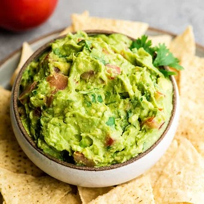

Guacamole Recipe

Description
This quick & easy guacamole recipe is made with a handful of healthy ingredients and is ready in 5 minutes! This simple guacamole dip is our favorite appetizer and we always make it on tacos nights! Watch the video to learn how to make this guacamole recipe!
Ingredients
- 3 avocados - peeled, pitted, and mashed
- 1 lime, juiced
- 1 teaspoon salt
- ½ cup diced onion
- 3 tablespoons chopped fresh cilantro
- 2 roma (plum) tomatoes, diced
- 1 teaspoon minced garlic
- 1 pinch ground cayenne pepper (Optional)
Steps
-
In a medium bowl, mash together the avocados, lime juice, and salt. Mix in onion, cilantro, tomatoes, and garlic. Stir in cayenne pepper. Refrigerate 1 hour for best flavor, or serve immediately.